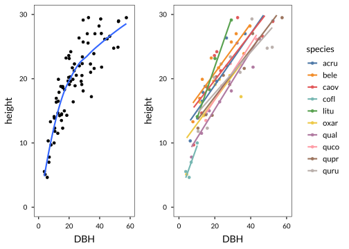

Chapter 6 Basic statistics and linear modelling
6.1 Introduction
This book is not an Introduction to statistics. There are many books focused on statistics, with or without example R code. The focus throughout this book is on the R code itself, as we try to present clear and short solutions to common analysis tasks. In the following, we assume you have a basic understanding of linear regression, Student’s \(t\)-tests, ANOVA, and confidence intervals for the mean.
Linear modelling is a general technique that includes linear regression, but also basic means testing, comparing samples, and more complex combinations of class and numeric predictors.
In linear modelling we are interested in understanding variation in a single numeric response variable (or sometimes binary). We can include all sorts of predictors (‘explanatory variables’, ‘independent variables’), depending on what we chose we end up with various techniques:
- factor variable(s), test difference in mean in our predictor across the factor (“Analysis of variance”, “t-test”)
- a single numeric predictor (simple linear regression)
- multiple numeric predictors, and interactions (multiple linear regression)
- mixture of factors and numeric predictors (in the simplest case, analysis of covariance - ANCOVA)
There are many more complicated possibilities, but the above is what this chapter is all about.
Packages used in this chapter
The examples will generally let you know which packages are used, but for your convenience, here is a complete list of the packages used.
For plotting, we often use ggplot2, ggthemes, scales and ggpubr (these are frequently omitted from the examples):
Otherwise:
lgrdata(for the example datasets)pastecs(for descriptive statistics)dplyr(for various data skills and the pipe operator%>%)pander(to format R output for use in rmarkdown documents)broom(for tidy printing of fitted models)multcomp(for multiple comparisons)visreg(for visualizing regression models)car(for various functions used in regression)emmeans(for computing marginal effects from regression models)
6.2 Probability distributions
You will have encountered a number of probability distributions before. For example, the Binomial distribution is a model for the distribution of the number of successes in a sequence of independent trials, for example, the number of heads in a coin tossing experiment. Another commonly used discrete distribution is the Poisson, which is a useful model for many kinds of count data. Of course, the most important distribution of all is the Normal or Gaussian distribution.
R provides sets of functions to find densities, cumulative probabilities, quantiles, and to draw random numbers from many important distributions. The names of the functions all consist of a one letter prefix that specifies the type of function and a stem which specifies the distribution. Look at the examples in the table below.
| Prefix | Meaning |
|---|---|
d |
density |
p |
cumulative probability |
q |
quantile |
r |
simulate |
| Suffix | Meaning |
|---|---|
binom |
Binomial |
pois |
Poisson |
norm |
Normal |
t |
Student’s t |
chisq |
Chi-squared |
f |
F |
Using the prefix and the suffix, we can construct each desired function. For example,
# Calculate the probability of 3 heads out of 10 tosses of a fair coin.
# This is a (d)ensity of a (binom)ial distribution.
dbinom(3, 10, 0.5)## [1] 0.1171875# Calculate the probability that a normal random variable (with
# mean of 3 and standard deviation of 2) is less than or equal to 4.
# This is a cumulative (p)robability of a (norm)al variable.
pnorm(4, 3, 2)## [1] 0.6914625# Find the t-value that corresponds to a 2.5% right-hand tail probability
# with 5 degrees of freedom.
# This is a (q)uantile of a (t)distribution.
qt(0.975, 5)## [1] 2.570582# Simulate 5 Poisson random variables with a mean of 3.
# This is a set of (r)andom numbers from a (pois)son distribution.
rpois(5, 3)## [1] 1 3 3 3 5See the help page ?Distributions for more details.
To make a quick plot of a distribution, we can use the density function in combination with curve. The following code makes Fig. 6.1.
# A standard normal distribution
curve(dnorm(x, sd=1, mean=0), from=-3, to=3,
ylab="Density", col="blue")
# Add a t-distribution with 3 degrees of freedom.
curve(dt(x, df=3), from =-3, to=3, add=TRUE, col="red")
# Add a legend (with a few options, see ?legend)
legend("topleft", c("Standard normal","t-distribution, df=3"), lty=1, col=c("blue","red"),
bty='n', cex=0.8)Figure 6.1: Two univariate distributions plotted with curve()
hist and one of the functions starting with r from above.
6.3 Descriptive Statistics
Descriptive statistics summarise some of the properties of a given data set. Generally, we are interested in measures of location (central tendency, such as mean and median) and scale (variance or standard deviation). Other descriptions can include the sample size, the range, and so on. We already encountered a number of functions that can be used to summarize a vector.
Let’s look at some examples for the Pupae dataset.
# Read data
data(pupae)
# Extract the weights (for convenience)
weight <- pupae$PupalWeight
# Find the number of observations
length(weight)## [1] 84## [1] 0.3110238## [1] 0.004113951Note that R will compute the sample variance (not the population variance). The standard deviation can be calculated as the square root of the variance, or use the sd function directly.
## [1] 0.06414009## [1] 0.06414009Robust measures of the location and scale are the median and inter-quartile range; R has functions for these.
## [1] 0.2975## [1] 0.09975The median is the 50th percentile or the second quartile. The quantile function can compute quartiles as well as arbitrary percentiles/quantiles.
## 0% 25% 50% 75% 100%
## 0.17200 0.25625 0.29750 0.35600 0.47300## 0% 10% 20% 30% 40% 50% 60% 70% 80% 90%
## 0.1720 0.2398 0.2490 0.2674 0.2892 0.2975 0.3230 0.3493 0.3710 0.3910
## 100%
## 0.4730Missing Values: All of the above functions will return NA if the data contains any missing values. However, they also provide an option to remove missing values (NAs) before their computations (see also Section 3.7.3).
## [1] NA## [1] 1.846446The summary function provides a lot of the above information in a single command:
## Min. 1st Qu. Median Mean 3rd Qu. Max.
## 0.1720 0.2562 0.2975 0.3110 0.3560 0.4730The moments package provides ‘higher moments’ if required, for example,
the skewness and kurtosis.
## [1] 0.3851656## [1] 2.579144The pastecs package includes a useful function that calculates many descriptive statistics for numeric vectors, including the standard error for the mean (for which R has no built-in function).
##
## Attaching package: 'pastecs'## The following object is masked from 'package:magrittr':
##
## extract## The following objects are masked from 'package:dplyr':
##
## first, last## nbr.val nbr.null nbr.na min max
## 84.000000000 0.000000000 0.000000000 0.172000000 0.473000000
## range sum median mean SE.mean
## 0.301000000 26.126000000 0.297500000 0.311023810 0.006998258
## CI.mean.0.95 var std.dev coef.var
## 0.013919253 0.004113951 0.064140091 0.206222446# conveniently, the output is a character vector which we can index by name,
# for example extracting the standard error for the mean
stat.desc(weight)["SE.mean"]## SE.mean
## 0.006998258Sometimes you may wish to calculate descriptive statistics for subgroups in the data. We will come back to this extensively in Section 4.1.1 and later sections.
6.4 Testing differences between groups
6.4.1 Testing a single sample
In some applications we simply want to know whether the mean of our data (the sample) is equal to some hypothesized value, or whether it is clearly higher or lower. The simplest approach is to compute a 95% confidence interval for the mean, and then check whether the hypothesized value falls inside this interval (in which case you cannot conclude the value is different).
One way to get confidence intervals in R is to use the quantile functions for the relevant distribution. A \(100(1-\alpha)\)% confidence interval for the mean on normal population is given by,
\[\bar{x} \pm t_{\alpha/2, n-1} \frac{s}{\sqrt{n}}\]
where \(\bar{x}\) is the sample mean, \(s\) the sample standard deviation and \(n\) is the sample size. \(t_{\alpha/2, n-1}\) is the \(\alpha/2\) tail point of a \(t\)-distribution on \(n-1\) degrees of freedom. That is, if \(T\) has a \(t\)-distribution on \(n-1\) degrees of freedom.
\[P(T \leq t_{\alpha/2, n-1}) = 1-\alpha/2 \]
The R code for this confidence interval can be written as,
# Sample data - the pupae data.
data(pupae)
weight <- pupae$PupalWeight
# 95% confidence interval - set to 0.1 for a 90% interval
alpha <- 0.05
xbar <- mean(weight)
s <- sd(weight)
n <- length(weight)
half.width <- qt(1-alpha/2, n-1)*s/sqrt(n)
# Confidence Interval
c(xbar - half.width, xbar + half.width)## [1] 0.2971046 0.3249431Here, we assumed a normal distribution for the population. You may have been taught that if n is large, say n>30, then you can use a normal approximation. That is, replace qt(1-alpha/2, n-1) with qnorm(1-alpha/2), but there is no need, R can use the t-distribution for any n (and the results will be the same, as the t-distribution converges to a normal distribution when the df is large).
qt and qnorm).
6.4.2 Hypothesis testing
There may be a reason to ask whether a dataset is consistent with a certain mean. For example, are the pupae weights consistent with a population mean of 0.29? For normal populations, we can use Student’s \(t\)-test, available in R as the t.test function. In all following results, we use the pander function (from the pander) package to make the output short and readable (and in markdown format). For best results, use it in an rmarkdown document (though it works fine otherwise as well). We assume you have loaded these two packages:
Let’s test the null hypothesis that the population mean is 0.29:
| Test statistic | df | P value | Alternative hypothesis | mean of x |
|---|---|---|---|---|
| 3.004 | 83 | 0.00352 * * | two.sided | 0.311 |
Note that we get the t-statistic, degrees of freedom (n-1) and a P value for the test, with the specified alternative hypothesis (not equal, i.e. two-sided). In addition, t.test gives us the estimated mean of the sample.
We can use t.test to do one-sided tests,
| Test statistic | df | P value | Alternative hypothesis | mean of x |
|---|---|---|---|---|
| 3.004 | 83 | 0.00176 * * | greater | 0.311 |
The t.test is appropriate for data that is approximately normally distributed. You can check this using a histogram or a QQ-plot. If the data is not very close to a normal distribution then the t.test is often still appropriate, as long as the sample is large.
If the data is not normal and the sample size is small, there are a couple of alternatives: transform the data (often a log transform is enough) or use a nonparametric test, in this case the Wilcoxon signed rank test. We can use the wilcox.test function for the latter, its interface is similar to t.test and it tests the hypothesis that the data is symmetric about the hypothesized population mean. For example,
| Test statistic | P value | Alternative hypothesis |
|---|---|---|
| 2316 | 0.009279 * * | two.sided |
6.4.2.1 Test for proportions
Sometimes you want to test whether observed proportions are consistent with a hypothesized population proportion. For example, consider a coin tossing experiment where you want to test the hypothesis that you have a fair coin (one with an equal probability of landing heads or tails). In your experiment, you get 60 heads out of 100 coin tosses. Do you have a fair coin? We can use the prop.test function:
# 60 'successes' out of a 100 trials, the hypothesized probability is 0.5.
prop.test(x=60, n=100, p=0.5) %>% pander| Test statistic | df | P value | Alternative hypothesis | p |
|---|---|---|---|---|
| 3.61 | 1 | 0.05743 | two.sided | 0.6 |
Likewise, we can perform one-sided tests with the argument alternative="greater" (not shown).
6.4.3 Inference for two populations
Commonly, we wish to compare two (or more) populations. For example, the pupae dataset has pupal weights for female and male pupae. We may wish to compare the weights of males (gender=0) and females (gender=1).
To compare the pupal weights of males and females, we use the formula interface for t.test. The formula interface is important because we will use it in many other functions, like linear regression and linear modelling.
# (output not shown)
# We assume equal variance between the groups, giving slightly more power,
# but see section 'unequal variances' further below.
t.test(PupalWeight ~ Gender, data=pupae, var.equal=TRUE)6.4.3.1 Paired data
The t.test can also be used when the data are paired, for example, measurements taken before and after some treatment on the same subjects. For this example, we will use the pulse data - data on pulse rates of individuals before and after exercise. We will test the simple idea that pulse rate is different after exercise. To do this, we first extract only those subjects that exercised (Ran=1),
6.4.3.2 Unequal variances
The default for the two-sample t.test is actually to not assume equal variances. The theory for this kind of test is quite complex, and the resulting \(t\)-test is now only approximate, with an adjustment called the ‘Satterthwaite’ or ‘Welch’ approximation made to the degrees of freedom.
| Test statistic | df | P value | Alternative hypothesis |
|---|---|---|---|
| -7.413 | 74.63 | 1.587e-10 * * * | two.sided |
| mean in group 0 | mean in group 1 |
|---|---|
| 0.2725 | 0.3513 |
Since this modified t-test makes fewer assumptions, you could ask why we ever use the equal variances form. If the assumption is reasonable, then this (equal variances) form will have more power, i.e. will reject the null hypothesis more often when it is actually false.
6.4.4 Testing many groups at once (ANOVA)
One-way ANOVA (ANalysis Of VAriance) can be used to compare means across two or more populations. We will not go into the theory here, but the foundation of ANOVA is comparing the variation between the group means to the variation within the groups (using an F-statistic).
We can use either the aov function or lm to perform ANOVAs. We will focus exclusively on the latter as it can be generalized more easily to other models. The use of aov is only appropriate when you have a balanced design (i.e., the same sample sizes in each of your groups).
To use lm for an ANOVA, we need a dataframe containing a (continuous) response variable and a factor variable that defines the groups. For example, in the Coweeta dataset, the species variable is a factor that defines groups by species. We can compute (for example) the mean height by species. Let’s look at an example using the Coweeta data, but with only four species to simplify the output.
library(dplyr)
# Take a subset and drop empty levels with droplevels.
data(coweeta)
cowsub <- filter(coweeta, species %in% c("bele","cofl","oxar","quru")) %>%
droplevels
# # Quick summary table (uses dplyr)
group_by(cowsub, species) %>%
summarize(height = mean(height))## # A tibble: 4 x 2
## species height
## <fct> <dbl>
## 1 bele 21.9
## 2 cofl 6.80
## 3 oxar 16.5
## 4 quru 21.1We might want to ask, does the mean height vary by species? Before you do any test for significance, a graphical summary of the data is always useful. For this type of data, box plots are preferred since they visualize not just the means but also the spread of the data (Fig. 6.2).
Figure 6.2: Simple box plot for the Coweeta data.
It seems like some of the species differences are quite large. We can fit a one-way ANOVA with lm, like so:
The fitted coefficients can be seen in summary(fit1), or more concisely with coef(fit1), but we prefer the use of the broom package, especially the functions tidy and glance :
## # A tibble: 4 x 5
## term estimate std.error statistic p.value
## <chr> <dbl> <dbl> <dbl> <dbl>
## 1 (Intercept) 21.9 1.56 14.0 7.02e-14
## 2 speciescofl -15.1 2.93 -5.15 2.04e- 5
## 3 speciesoxar -5.36 2.35 -2.28 3.04e- 2
## 4 speciesquru -0.761 2.27 -0.335 7.40e- 1Here, tidy gives the table of coefficients. Notice the four estimated Coefficients, these represent the so-called contrasts. In this case, Intercept represents the mean of the first species, bele. The next three coefficients are the differences between each species and the first (e.g., species cofl has a mean that is -15.07 lower than bele). Also shown are the t-statistic (and p-value) for each coefficient, for a test where the value is compared to zero. Not surprisingly the Intercept (i.e., the mean for the first species) is significantly different from zero (as indicated by the very small p-value). Two of the next three coefficients are also significantly different from zero.
We can get more details of the fit using glance.
## # A tibble: 1 x 11
## r.squared adj.r.squared sigma statistic p.value df logLik AIC BIC
## <dbl> <dbl> <dbl> <dbl> <dbl> <int> <dbl> <dbl> <dbl>
## 1 0.533 0.481 4.95 10.3 1.11e-4 4 -91.4 193. 200.
## # ... with 2 more variables: deviance <dbl>, df.residual <int>Here we see various useful statistics including the R squared (goodness of fit), and the p-value of the overall model. This p-value tells us whether the whole model is significant. In this case, it is comparing a model with four coefficients (one for each species) to a model that just has the same mean for all groups. In this case, the model is highly significant – i.e. there is evidence of different means for each group. In other words, a model where the mean varies between the four species performs much better than a model with a single grand mean.
6.4.5 Multiple comparisons
The ANOVA, as used in the previous section, gives us a single p-value for the overall ‘species effect’. The summary statement further shows whether individual species are different from the first level in the model, which is not always useful. If we want to know whether the four species were all different from each other, we can use a multiple comparison test.
glht for more information.
We will use the glht function from the multcomp package (as a side note, base R includes the TukeyHSD function, but that does not work with lm, only with aov).
# First fit the linear model again (a one-way ANOVA,
# because species is a factor)
lmSpec <- lm(height ~ species, data=cowsub)
# Load package
library(multcomp)
# Make a 'general linear hypothesis' object, Tukey style.
# (Note many other options in ?glht)
tukey_Spec <- glht(lmSpec, linfct=mcp(species="Tukey"))
# Print a summary. This shows p-values for the null hypotheses
# that species A is no different from species B, and so on.
summary(tukey_Spec)##
## Simultaneous Tests for General Linear Hypotheses
##
## Multiple Comparisons of Means: Tukey Contrasts
##
##
## Fit: lm(formula = height ~ species, data = cowsub)
##
## Linear Hypotheses:
## Estimate Std. Error t value Pr(>|t|)
## cofl - bele == 0 -15.0695 2.9268 -5.149 <0.001 ***
## oxar - bele == 0 -5.3620 2.3467 -2.285 0.1247
## quru - bele == 0 -0.7614 2.2731 -0.335 0.9866
## oxar - cofl == 0 9.7075 3.0295 3.204 0.0169 *
## quru - cofl == 0 14.3081 2.9729 4.813 <0.001 ***
## quru - oxar == 0 4.6006 2.4039 1.914 0.2434
## ---
## Signif. codes: 0 '***' 0.001 '**' 0.01 '*' 0.05 '.' 0.1 ' ' 1
## (Adjusted p values reported -- single-step method)summary(tukey_Spec)), the p-values are adjusted for multiple comparisons with the so-called ‘single-step method’. To use a different method for the correction (there are many), try the following example: summary(tukey_Spec, test=adjusted("Shaffer"))
Also look at the other options in the help pages for ?adjusted and ?p.adjust.
We can also produce a quick plot of the multiple comparison, which shows the pair-wise differences between the species with confidence intervals.
This code produces Fig. 6.3.
Figure 6.3: A standard plot of a multiple comparison.
6.4.6 Comparing many groups by two predictors (two-way ANOVA)
Sometimes there are two (or more) treatment factors. The ‘age and memory’ dataset (see ?memory) includes the number of words remembered from a list for two age groups and five memory techniques.
This dataset is balanced, as shown below. in a table of counts for each of the combinations. First we fit a linear model of the main effects.
data(memory)
# To make the later results easier to interpret, reorder the Process
# factor by the average number of words remembered.
memory <- mutate(memory,
Process = reorder(Process, Words, mean))
# Count nr of observations
xtabs( ~ Age + Process, data=memory)## Process
## Age Counting Rhyming Adjective Imagery Intentional
## Older 10 10 10 10 10
## Younger 10 10 10 10 10# Fit linear model
fit2 <- lm(Words ~ Age + Process, data=memory)
# Full output (not shown)
# summary(fit2)
# Instead, show just coefficient summary table in nice format
broom::tidy(fit2)## # A tibble: 6 x 5
## term estimate std.error statistic p.value
## <chr> <dbl> <dbl> <dbl> <dbl>
## 1 (Intercept) 5.20 0.763 6.81 8.99e-10
## 2 AgeYounger 3.10 0.623 4.97 2.94e- 6
## 3 ProcessRhyming 0.5 0.985 0.507 6.13e- 1
## 4 ProcessAdjective 6.15 0.985 6.24 1.24e- 8
## 5 ProcessImagery 8.75 0.985 8.88 4.41e-14
## 6 ProcessIntentional 8.90 0.985 9.03 2.10e-14The summary of the fitted model displays the individual t-statistics for each estimated coefficient. As with the one-way ANOVA, the significance tests for each coefficient are performed relative to the base level (by default, the first level of the factor). In this case, for the Age factor, the Older is the first level, and for the Process factor, Adjective is the first level. Thus all other coefficients are tested relative to the “Older/Adjective” group. The \(F\)-statistic at the end is for the overall model, it tests whether the model is significantly better than a model that includes only a mean count.
If we want to see whether Age and/or Process have an effect, we need F-statistics for these terms. Throughout this book, to compute p-values for terms in linear models, we use the Anova function from the car package.
## Anova Table (Type II tests)
##
## Response: Words
## Sum Sq Df F value Pr(>F)
## Age 240.25 1 24.746 2.943e-06 ***
## Process 1514.94 4 39.011 < 2.2e-16 ***
## Residuals 912.60 94
## ---
## Signif. codes: 0 '***' 0.001 '**' 0.01 '*' 0.05 '.' 0.1 ' ' 1In this form, the \(F\)-statistic is formed by comparing models that do not include the term, but include all others. For example, Age is tested by comparing the full model against a model that includes all other terms (in this case, just Process).
6.4.7 Interactions
An important question when we have more than one factor in an experiment is whether there are any interactions. For example, do Process effects differ for the two Age groups, or are they simply additive? We can add interactions to a model by modifying the formula. An interaction is indicated using a “:”. We can also include all main effects and interactions using the * operator.
# Two equivalent ways of specifying a linear model that includes all main effects
# and interactions:
fit3 <- lm(Words ~ Age + Process + Age:Process, data=memory)
# Is the same as:
fit3.2 <- lm(Words ~ Age * Process, data=memory)
Anova(fit3.2)## Anova Table (Type II tests)
##
## Response: Words
## Sum Sq Df F value Pr(>F)
## Age 240.25 1 29.9356 3.981e-07 ***
## Process 1514.94 4 47.1911 < 2.2e-16 ***
## Age:Process 190.30 4 5.9279 0.0002793 ***
## Residuals 722.30 90
## ---
## Signif. codes: 0 '***' 0.001 '**' 0.01 '*' 0.05 '.' 0.1 ' ' 1The Anova table shows that the interaction is significant. When an interaction is significant, this tells you nothing about the direction or magnitude of the interaction term. You can inspect the estimated coefficients in the summary output, but we recommend to first visualize the interaction with simple plots, as the coefficients can be easily misinterpreted. One way to visualize the interaction is to use the interaction.plot function, as in the following example.
This code produces Fig. 6.4. If there were no interaction between the two factor variables, you would expect to see a series of parallel lines (because the effects of Process and Age would simply be additive).
# Plot the number of words rememberd by Age and Process
# This standard plot can be customized in various ways, see ?interaction.plot
with(memory, interaction.plot(Age, Process, Words))Figure 6.4: An interaction plot for the memory data, indicating a strong interaction (because the lines are not parallel).
emmeans package. Load the emmeans package, and run the code fit3.emm <- emmeans(fit3, ~ Age | Process), followed by pairs(fit3.emm). You can now inspect in great detail differences between levels of your predictors.
6.4.8 Comparing models
In the above example, we fitted two models for the Memory dataset: one without, and one with the interaction between Process and Age. We assessed the significance of the interaction by inspecting the p-value for the Age:Process term in the Anova statement. Another possibility is to perform a likelihood ratio test on two ‘nested’ models, the model that includes the term, and a model that excludes it. We can perform a likelihood ratio test with the anova function, not to be confused with Anova from the car package!
# We can perform an anova on two models to compare the fit.
# Note that one model must be a subset of the other model.
# In this case, the second model has the same predictors as the first plus
# the interaction, and the likelihood ratio test thus tests the interaction.
anova(fit2,fit3)## Analysis of Variance Table
##
## Model 1: Words ~ Age + Process
## Model 2: Words ~ Age + Process + Age:Process
## Res.Df RSS Df Sum of Sq F Pr(>F)
## 1 94 912.6
## 2 90 722.3 4 190.3 5.9279 0.0002793 ***
## ---
## Signif. codes: 0 '***' 0.001 '**' 0.01 '*' 0.05 '.' 0.1 ' ' 1A second common way to compare different models is by the AIC (Akaike’s Information Criterion), which is calculated based on the likelihood (a sort of goodness of fit), and penalized for the number of parameters (i.e. number of predictors in the model). The model with the lowest AIC is the preferred model. Calculating the AIC is simple,
## df AIC
## fit2 7 518.9005
## fit3 11 503.5147We once again conclude that the interaction improved the model fit substantially.
6.4.9 Diagnostics
The standard ANOVA assumes normality of the residuals, and we should always check this assumption with some diagnostic plots (Fig. 6.5). Although R has built-in diagnostic plots, we prefer the use of qqPlot and residualPlot, both from the car package.
par(mfrow=c(1,2))
library(car)
# Residuals vs. fitted
residualPlot(fit3)
# QQ-plot of the residuals
qqPlot(fit3)## [1] 26 86Figure 6.5: Simple diagnostic plots for the Memory ANOVA.
The QQ-plot shows some slight non-normality in the upper right. The non-normality probably stems from the fact that the Words variable is a ‘count’ variable.
Words makes the residuals closer to normally distributed.
6.5 Linear regression
6.5.1 Icecream sales: a motivating example
It is well known that ice cream sales are higher during warm weather. As an ice cream salesman, you hardly have to apply regression analysis to know this - it is just obvious. Suppose that one year, you sell icecream at Oosterpark in Amsterdam. Sales are pretty good, the summer is nice and warm. The next year you try your luck at the Dappermarkt, a busy market in the east of Amsterdam. You tally your sales every week, and finally make a plot comparing average weekly sales:
data(icecream)
library(ggplot2)
library(ggthemes)
ggplot(icecream, aes(x = location, y = sales, fill = location)) +
scale_fill_manual(values=c("white","grey")) +
geom_boxplot() +
theme(aspect.ratio = 2, legend.position="none") +
lims(y=c(0,1200))Figure 6.6: Average weekly ice cream sales at two locations, over two years
Based on this simple boxplot, you would either conclude that there is no difference in sales, or that perhaps sales were slightly better in Oosterpark. We can also perform a t-test for two samples, which tests the hypothesis that the two means are not different (in other words, location has no effect on sales).
##
## Welch Two Sample t-test
##
## data: sales by location
## t = -1.3227, df = 36.442, p-value = 0.1942
## alternative hypothesis: true difference in means is not equal to 0
## 95 percent confidence interval:
## -183.16655 38.51966
## sample estimates:
## mean in group Dappermarkt mean in group Oosterpark
## 660.4856 732.8090pander package: pander::pander(t.test(sales ~ location, data=icecream)). The pander function also works for many other R objects.
From this test we conclude no difference: the P value is very large (meaning the observed sample difference is not unusual, and could have easily arisen by chance).
Of course, there is something rather fishy about this experiment. We are testing the difference between two locations - but both locations were ‘tested’ in different years, when other conditions may have been different. In other words, we have not performed a proper experiment at all - changing just one variable at a time - location is confounded by the year.
We do not need to get into detail here to design a proper scientific ice cream sales experiment, instead we are going to make the point that we can account for some confounding variables via regression analysis. How about temperature? As an astute ice cream salesman, you downloaded weekly average air temperature for Amsterdam, and added these to the data. Now let’s make a plot using air temperature as a covariate.
# Assuming you have loaded ggplot2 and ggthemes
ggplot(icecream, aes(x = temperature, y = sales, fill = location)) +
geom_point(shape = 21, size=3) +
scale_fill_manual(values = c("white","dimgrey")) +
lims(y=c(0,1200), x=c(0,35))Figure 6.7: Ice cream sales by location, and varying with temperature.
In this figure we arrive at a completely different conclusion - but only because we have taken into account the covariate weekly temperature. Now, at a given temperature, ice cream sales were higher at the new location - Dappermarkt. This is an example of how a confounding variable can mask (or even reverse) effects of some other variable. It seems obvious from the figure that temperature was overall lower when you sold ice cream at the Dappermarkt, explaining why average weekly sales were in the end no different.
Using regression analysis, we can test the assertion that ice cream sales are higher at Dappermarkt, at a given temperature. But before we do that, we first introduce the tools to test difference between means (as we just did with a simple two-sample t-test), and introduce basic linear regression. We return to the icecream problem in Section 6.6.2.
6.5.2 Simple and multiple linear regression
To fit linear models of varying complexity, we can use the lm function. The simplest model is a straight-line relationship between an x and a y variable. In this situation, the assumption is that the y-variable (the response) is a linear function of the x-variable (the independent variable), plus some random noise or measurement error. For the simplest case, both x and y are assumed to be continuous variables.
We use this method to study the relationship between two continuous variables: a response (‘y variable’) and a predictor (or independent variable) (‘x variable’). We can use multiple regression to study the relationship between one response and more than one predictor.
We are going to use the Cereals data to inspect the “health rating” (rating), and two predictors: fibre content (fiber) and sugar content (sugar). To start with, let’s make two scatter plots, side by side.
# Read the data, if you haven't already
data(cereals)
library(scales)
library(gridExtra)
# Two simple scatter plots on a log-log scale
g1 <- ggplot(cereals, aes(y = rating, x = fiber)) +
geom_point(pch=15) + lims(y=c(0,100)) +
geom_smooth(method='lm')
g2 <- ggplot(cereals, aes(y = rating, x = sugars)) +
geom_point(pch=19, col="dimgrey") + lims(y=c(0,100)) +
geom_smooth(method='lm')
grid.arrange(g1, g2, ncol = 2)Figure 6.8: Leaf area as a function of height and diameter (note the log-log scale).
Here we make use of ggplot2’s built-in regression lines, which are easily added to the plot. The default behaviour is to add a 95% confidence band as well. In this case we immediately see that fiber is a worse predictor than sugars for the health rating, given the wider confidence interval for the location of the mean response (i.e. the regression line).
We are going to fit a model that looks like, using statistical notation, \[\begin{equation} y = \alpha+\beta_1 x_1 +\beta_2 x_2 +\varepsilon \tag{6.1} \end{equation}\]
where \(\alpha\) is the intercept, \(x_1\) and \(x_2\) are the two predictors (fiber and sugars), and the two slopes are \(\beta_1\) and \(\beta_2\). We are particularly interested in testing for significant effect of both predictors, which is akin to saying that we are testing the values of the two slopes against zero.
# Fit a multiple regression without interactions, and inspect the summary
fit4 <- lm(rating ~ sugars + fiber, data=cereals)
# A detailed summary (not shown for brevity)
# summary(fit4)
# A clean summary, especially for in an rmarkdown file
fit4 %>% pander| Estimate | Std. Error | t value | Pr(>|t|) | |
|---|---|---|---|---|
| (Intercept) | 52.17 | 1.556 | 33.54 | 4.266e-46 |
| sugars | -2.244 | 0.1632 | -13.75 | 5.975e-22 |
| fiber | 2.867 | 0.2979 | 9.623 | 1.276e-14 |
As you can see, we again use the pander package to give super clean results, which can be used in an rmarkdown document. We see here that overall we have an R2 of 81% (not bad), and that both predictors contribute significantly (the P values are very low for both).
Next, we perform some diagnostic plots (shown in Fig. 6.9). The standard errors (and confidence intervals, and hypothesis tests) will be unreliable if the assumptions of normality (right panel) or linearity (left panel) are seriously violated. If you are only interested in the mean response against your predictors, but not so much their uncertainties, you can usually ignore these plots.
Figure 6.9: Diagnostic plots for linear regression of the Cereals data.
## [1] 27 31Now that we have a fitted model, what do its predictions actually look like? What relationship have we learned between health rating, sugars, and fiber content? The visreg package provides a very concise method to visualize (many kinds of) fitted regression models.
In this case, the command visreg::visreg(fit4) would show two plots very similar to the ones above - which does not really add much information. What if we can show the effects of both predictors, in just one plot? The following code produces Fig. 6.10.
library(visreg)
visreg(fit4, "sugars", by = "fiber", overlay = TRUE,
gg = TRUE) +
lims(y = c(0,100))
Figure 6.10: Visualizing linear regression of the Cereals data with visreg.
Here we clearly, and in one panel, visualize the negative effect of adding more sugar in a cereal, and the positive effect of adding more fiber. The visreg function plots the predictions from our model at an arbitrary selection of predictor values (here, 0, 1.5 and 5).
visreg, use the argument breaks=c(1,5) to set the predictor values to those of your choice.
We can also make 3D plots, though these are not always useful, and I personally prefer a ‘pseudo-3D’ plot as in the example above to visualize the contribution of two variables.
Of course, we are not restricted to just two predictors, and we can include interactions as well. In the previous model (fit4) the effects of fiber and sugars were additive, in other words the effect of fiber was independent of the amount of sugars. We can test this assumption by adding the interaction to the model.
# A multiple regression that includes all main effects as wel as interactions
fit5 <- lm(rating ~ sugars + fiber + fiber:sugars, data=cereals)
summary(fit5) %>% pander::pander(.)| Estimate | Std. Error | t value | Pr(>|t|) | |
|---|---|---|---|---|
| (Intercept) | 51.38 | 1.695 | 30.31 | 9.996e-43 |
| sugars | -2.097 | 0.2056 | -10.2 | 1.277e-15 |
| fiber | 3.226 | 0.428 | 7.537 | 1.12e-10 |
| sugars:fiber | -0.07363 | 0.06316 | -1.166 | 0.2475 |
| Observations | Residual Std. Error | \(R^2\) | Adjusted \(R^2\) |
|---|---|---|---|
| 76 | 6.112 | 0.8198 | 0.8123 |
(Note: the formula can also be written as fiber*sugars)
In this case, the interaction is not significant: note the large P value for the sugars:fiber interaction. We can also inspect the AIC, and notice that the total model AIC has not decreased, which also indicates the model has not improved by adding an interaction term.
## df AIC
## fit4 4 496.1572
## fit5 5 496.73596.6 Linear models with factors and continuous variables
So far we have looked at ANOVA, including two-way ANOVA, where a response variable is modelled as dependent on two treatments or factors, and regression including multiple linear regression where a response variable is modelled as dependent on two continuous variables. These are just special cases of the linear model, and we can extend these simple models by including a mix of factors and continuous predictors. The situation where we have one continuous variable and one factor variable was classicallyknown as ANCOVA (analysis of covariance), but using thelm` function we can specify any model with a combination of predictors.
In the following example, we inspect the height of trees against the stem diameter (DBH) for the Coweeta example dataset. When plotting all data, we are led to believe that the overall response of height to DBH is highly non-linear (left panel). However, when we fit a simple linear model for each species separately (right panel), the relationship appears to consist of a combination of linear responses.
data(coweeta)
g1 <- ggplot(coweeta, aes(x = DBH, y = height)) +
geom_point() + geom_smooth(method="loess", se=FALSE) +
scale_colour_tableau() + lims(x=c(0,60), y=c(0,30))
g2 <- ggplot(coweeta, aes(x = DBH, y=height, col=species)) +
geom_point() + geom_smooth(method="lm", se=FALSE) +
scale_colour_tableau() + lims(x=c(0,60), y=c(0,30))
grid.arrange(g1, g2, ncol = 2, widths=c(0.4, 0.6))
To fit a model that allows a different response for each species, we use the notation from before:
6.6.1 Visualizing fitted regression models
The coefficients associated with a factor predictor in a linear model are given as contrasts (i.e. differences between factor levels).
While this is useful for comparisons of treatments, it is often more instructive to visualize the predictions at various combinations of factor levels.
A number of options exist to extract and visualize fitted regression models - to make sense of differences between groups, the effects of covariates, and the impact of interactions. We prefer the visreg package, which can be used to make attractive plots of the predictions of a linear model.
The following example makes Fig. 6.11.
library(visreg)
# Load data (lgrdata package needed)
data(memory)
# To make the later results easier to interpret, reorder the Process
# factor by the average number of words rememberer (we did this earlier in
# the chapter already for this dataset, it is repeated here).
memory <- mutate(memory,
Process = reorder(Process, Words, mean))
# Two linear models: one without, and one with an interaction
fit7 <- lm(Words ~ Age + Process, data=memory)
fit8 <- lm(Words ~ Age*Process, data=memory)
# Here we specify which variable should be on the X axis (Process),
# and which variable should be added with different colours (Age).
visreg(fit7, "Process", by="Age", overlay=TRUE)
visreg(fit8, "Process", by="Age", overlay=TRUE)Figure 6.11: Visualization of two fitted linear model with the visreg package. The model on the right includes an interaction between Process and Age, the model on the left does not.
You can test for yourself that the interaction is a highly significant predictor in the model.
6.6.2 Group differences in regression models: back to ice cream sales
At the beginning of this chapter (Section 6.5.1), we looked at an example where including a covariate drastically changed our conclusions about an effect. Simply testing the difference between two locations where we sold ice creams showed no effect, but including temperature at a covariate, it appeared that at a given temperature, there was a difference between the locations.
Here, we continue this example as it shows that we need to closely inspect a fitted model before making any conclusions - and that estimated coefficients of a regression model can lead to wrong conclusions, if not carefully examined.
To continue, first read in the icecream data as shown in Section 6.5.1. We now fit a linear model with one numeric, and one factor variable. We immediately include all effects, including the interaction.
You can inspect all details in the summary of this model yourself (summary(lm_ice1)) - here we just look at the estimated coefficients from the model. Recall that in a linear model, the intercept is assigned to the first level of the factor variable in the model, in this case levels(icecream$location) shows that this is ‘Dappermarkt’.
| Estimate | Std. Error | t value | Pr(>|t|) | |
|---|---|---|---|---|
| (Intercept) | 78.41 | 27.72 | 2.829 | 0.00759 |
| locationOosterpark | 99.64 | 42.53 | 2.343 | 0.02477 |
| temperature | 37.48 | 1.704 | 22 | 1.837e-22 |
| locationOosterpark:temperature | -11.19 | 2.255 | -4.963 | 1.683e-05 |
Four coefficients are shown, these are:
- Intercept : ice cream sales for the first level of ‘Location’ (Dappermarkt), when temperature equals zero (i.e. the intersection of the regression line with the y-axis when x = 0).
- locationOosterpark : The difference in intercept for Oosterpark location, compared to the first level (Dappermarkt). A positive value here seems to indicate higher sales at the Oosterpark location (when temperature is zero - read further below!).
- temperature : The slope of sales per unit temperature (i.e. for every degree increase in temperature, sales go up this much), for Dappermarkt.
- locationOosterpark:temperature : the difference in slope for the Oosterpark, compared to Dappermarkt. This shows the slope is lower for Oosterpark.
Based on the above, it seems difficult to draw conclusions about the difference between locations. This is because the intercept is not at all informative: it quantifies ice cream sales when temperature equals zero, but we do not even try to sell ice cream when it is cold outside. To visualize what is going on, we modify the standard visreg plot to draw the regression lines all the way to zero. We also show how to adjust the appearance of the plot (see ?plot.visreg for details).
visreg(lm_ice1, "temperature", by="location",
overlay = TRUE, xlim=c(0,40),
line.par=list(col=c("dimgrey","grey")),
fill.par=list(col=c("#BEBEBE80","#BEBEBE80")),
points.par=list(col=c("dimgrey","grey"), cex=1.2))
We now see that the regression lines ‘cross over’ around a temperature of 10, giving a higher intercept for Oosterpark.
A meaningful test in situations like this is to test for group differences at a given value of our covariate(s). A number of approaches exist in various add-on packages, but we prefer to first show the basic approach using predict - a function that has methods for practically all models we use. It also offers great flexibility, and we don’t have to wonder what exactly we are testing.
Somewhat arbitrarily, we want to test for location differences at a temperature of 25 degrees. To do this, I will construct confidence intervals for both locations, as follows. In the call to predict, it is important to list values for all variables in the model. This makes this approach less practical for models with many more regressors (see below for another approach).
# Predict from model, at temperature =25.
pred_ice <- predict(lm_ice1,
newdata = data.frame(temperature = 25,
location = levels(icecream$location)),
se = TRUE)If you inspect this object, you will find that sales at Dappermarkt are 1015.4 with a standard error of 18.1, and sales at Oosterpark are 835.2 (SE 10.1). The standard errors may be used to construct approximate 95% confidence intervals (by using twice the standard error).
A more convenient approach is to use the emmeans package to extract marginal effects of our fitted model. The default approach in this package is to test for group differences at the average level of other predictors. This approach is also called ‘least-square means’. However, we can adjust what value we want to use.
## NOTE: Results may be misleading due to involvement in interactions## location emmean SE df lower.CL upper.CL
## Dappermarkt 1015 18.1 36 979 1052
## Oosterpark 835 10.1 36 815 856
##
## Confidence level used: 0.95You can ignore the warning in this case, since we have used both the predictors in our model - there are no other ‘hidden’ predictors that may complicate matters. As you can see for yourself, the emmeans package gives the same results as the basic predict approach, but it is certainly much more practical.
6.6.3 Logarithmic transformation
For data that are very heteroscedasctic, that is, have quickly increasing variance with the value of the predictor, it is usually necessary to use a logarithm transformation of the data. In extreme cases, not applying the log-transform leads to very poor model fits, with very large influence of a few points, and possibly a fit that does not describe the data well at all.
See Fig. 6.12 for an example where a log-transform is used.
data(coweeta)
library(scales)
g1 <- ggplot(coweeta, aes(x = biomass, y = folmass)) +
geom_point() +
labs(x = "Mass of tree (kg)", y = "Mass of leaves (kg)")
g2 <- g1 +
scale_x_log10() +
scale_y_log10() +
annotation_logticks() +
expand_limits(x=c(1,10^4), y=100)
grid.arrange(g1, g2, ncol = 2)
Figure 6.12: An example of a dataset that screams for a logarithmic transformation. Left panel: untransformed data, showing very non-constant variance, indicating larger variation in the response variable for larger individuals. Right panel: both variables have been log-transformed, giving a nice linear relationship with constant variance.
origin (i.e. American, Japanese or European) to color the symbols. This is another good example that you should always consider covariates in a linear model.
The following code fits two linear models to the data above, one to the raw, untransformed data, and one after log10-transforming both the predictor and the response variable. In previous examples we used residualPlot from the car package to quickly make plots of residuals versus fitted values, here we implement a simple version using ggplot2 (and note that we jump ahead and define our own function, a topic we return to in Chapter 7).
lm1 <- lm(folmass ~ biomass, data = coweeta)
lm2 <- lm(log10(folmass) ~ log10(biomass), data = coweeta)
residPlot <- function(model){
ggplot(model, aes(.fitted, .resid)) +
geom_hline(yintercept = 0) +
geom_point() +
stat_smooth(method="loess", span=0.8)
}
grid.arrange(residPlot(lm1), residPlot(lm2), ncol = 2)Figure 6.13: Residuals versus fitted for the Coweeta biomass regression model, either without (left panel) or with (right panel) log-transformation of x and y variables.
As Fig. 6.13 shows, the log-transformation results in much better model diagnostics. We can expect that the model will give an overall better fit to the data, because when we did not transform, the location of the regression line will be overly influenced by values far away from the line. After transformation, this effect will be much reduced, and the model will be more robust.
Second, the standard errors of the coefficients in the untransformed fit are very much biased, leading to confidence intervals that are much too narrow. In this case, a log-transformation could be used to remedy this problem, but in other cases we want to avoid transformations, or they are simply not adequate. In that case, we might use the bootstrap.
This well known and often used transformation does have some consequences for interpreting the linear model fit that are often misunderstood. The key aspect to understand is that the model is no longer additive as the usual linear model (where effects of predicts are simply added), but rather multiplicative (effects of various predictors are multiplied). This has consequences for understanding interactions in the model as well.
6.6.4 Adding quadratic and polynomial terms
So far we have seen models with just linear terms, but it is straightforward and often necessary to add quadratic (\(x^2\)) or higher-order terms (e.g. \(x^3\)) when the response variable is far from linear in the predictors. You can add any transformation of the predictors in an lm model by nesting the transformation inside the I() function, like so:
This model fits both the linear (diameter) and squared terms (I(diameter\^2)) of the predictor, as well as the usual intercept term. If you want to fit all polynomial terms up to some order, you can use the poly function like so,
This model specification is exactly equivalent to the above, and is more convenient when you have multiple quadratic / polynomial terms and interactions with factor variables.
The following example quickly tests whether a quadratic term improves the model fit of height vs. diameter for the species PIPO in the allometry dataset.
data(allometry)
pipo <- subset(allometry, species == "PIPO")
# Fit model with the quadratic term:
lmq2 <- lm(height ~ diameter + I(diameter^2), data=pipo)
# The very small p-value for the quadratic terms shows that the
# relationship is clearly not linear, but better described with a
# quadratic model.
Anova(lmq2)## Anova Table (Type II tests)
##
## Response: height
## Sum Sq Df F value Pr(>F)
## diameter 821.25 1 53.838 5.905e-07 ***
## I(diameter^2) 365.78 1 23.980 0.0001001 ***
## Residuals 289.83 19
## ---
## Signif. codes: 0 '***' 0.001 '**' 0.01 '*' 0.05 '.' 0.1 ' ' 1When fitting a quadratic model, it is again very useful to use visreg to inspect the model that is estimated, since it becomes even more difficult to make sense of the various linear, quadratic, and intercept terms, especially when interactions with factor variables are added. Consider this example for the allometry dataset, which makes Fig. 6.14.
# Fit a linear model with linear, quadratic terms, and all species interactions.
allomquadfit <- lm(height ~ poly(diameter, 2)*species, data=allometry)
# Inspect summary(allomquadfit) to confirm you cannot possibly make sense of this
# many coefficients.
# But plotting the predictions is much easier to understand:
visreg(allomquadfit, "diameter", by="species", overlay=TRUE)Figure 6.14: Height modelled as a quadratic function of diameter, by species.
6.6.5 Which predictors are more important?
Frequently we are interested in knowing which of the predictor variables explain more variation in the response variable, in other words are more strongly correlated with the response.
One often-seen approach is to compute all correlations between the response and each of the predictors, and conclude that those with higher correlation coefficients will be most important. The flaw in this approach is that predictor variables are very often correlated with each other, making the approach potentially misleading. Cross-correlations between variables can easily hide important predictor variables. Nonetheless it can be a useful start, as we do here with the automobiles data. The following code makes Fig. 6.15.
data(automobiles)
# A modern implementation of a correlation plot in the corrplot package.
library(corrplot)
auto_cor <- cor(automobiles[,4:9], use = "complete.obs")
corrplot(auto_cor, method = "ellipse")Figure 6.15: Correlation plot for the automobiles data.
As we can see in Fig. 6.15, the response variable (fuel_efficiency) seems well correlated with four of the response variables, but weaker with acceleration.
Sometimes we see the use of the absolute value of the t-statistic to rank variables by ‘importance’ in the regression model. Within a single model, the t-statistic will be exactly related to the p-value (low p-values mean large t-statistic). Both t-statistics and p-values are very poor measures of importance. A large t-statistic may also arise when the sample size is large, the measurements are accurate, or there is low variability overall.
Instead what we are often interested in is how much variation is explained by each variable in the model. This calculation is complicated by the fact that predictor variables tend to be correlated with each other, so you cannot simply add up the R2 due to each predictor separately.
The relaimpo package includes a number of importance measures - the recommended version can be interpreted as the % variation explained by each predictor variable:
# A model with five predictors
fit_fuel1 <- lm(fuel_efficiency ~ cylinders + engine_volume +
horsepower + weight + acceleration,
data = automobiles)
# For importance measures
library(relaimpo)
# recommended method lmg in relaimpo
imp_fitfuel <- calc.relimp(fit_fuel1, type="lmg")
# The resulting object is a bit complicated.
# If you print the object (simply type imp_fitfuel), lots of information is given.
# Instead we just need this:
sort(imp_fitfuel$lmg, TRUE)## weight horsepower engine_volume cylinders acceleration
## 0.21667697 0.19895781 0.18619931 0.17158534 0.04737539The values mean that weight explains 21% of the variation, but acceleration only 4%. Note that the sum of these values adds up (nearly precisely) to the R2 of the model (look at summary(fit_fuel1)).
A more common approach is to test how mucb the R2 decreases if a predictor is dropped from the model. When important variables are removed, the model fits a lot worse overall. This can be achieved via:
drop1(fit_fuel1)
6.7 Exercises
6.7.1 Probabilities
For this exercise, refer to the tables and examples in Section 6.2.
For a normal random variable \(X\) with mean 5.0, and standard deviation 2.0, find the probability that \(X\) is less than 3.0.
Find the probability that \(X\) is greater than 4.5.
Find the value \(K\) so that \(P(X > K) = 0.05\).
When tossing a fair coin 10 times, find the probability of seeing no heads (Hint: this is a binomial distribution).
Find the probability of seeing exactly 5 heads.
Find the probability of seeing more than 7 heads.
6.7.2 Univariate distributions
Simulate a sample of 100 random data points from a normal distribution with mean 100 and standard deviation 5, and store the result in a vector called
x.Plot a histogram and a boxplot of the vector you just created (see Section5.2.3). If you haven’t make a boxplot, simply use the
boxplotfunction on your vector!Calculate the sample mean, standard deviation, median and interquartile range.
Using the data above, test the hypothesis that the mean equals 100 (using
t.test). In science, it is customary (though debatable) to call an effectsignificantif the p-value is smaller than 0.05. Note that here we test whether the true mean is different from 100 - in this case we know the true mean since the data were sampled from a normal distribution with mean 100. Bonus question: how often do we find a p-value smaller than 0.05 in this example, do you think? (that is, resampling the data from step 1., and then testing).Test the hypothesis that mean equals 90.
Repeat the above two tests using a Wilcoxon signed rank test. Compare the p-values with those from the \(t\)-tests you just did.
6.7.3 More \(t\)-tests
For this question, use the pupae data.
Use the
t.testfunction to comparePupalWeightbyT_treatment.Repeat above using a Wilcoxon rank sum test.
## Warning in wilcox.test.default(x = c(0.244, 0.319, 0.221, 0.28, 0.257,
## 0.333, : cannot compute exact p-value with ties- Run the following code to generate some data:
base <- rnorm(20, 20, 5)
x <- base + rnorm(20,0,0.5)
y <- base + rnorm(20,1,0.5)Using a two-sample t-test compare the means of
xandy, assume that the variance is equal for the two samples.Repeat the above using a paired \(t\)-test. How has the \(p\)-value changed?
Which test is most appropriate?
6.7.4 Simple linear regression
Continue with the pupae data. Perform a simple linear regression of Frass on PupalWeight. Produce and inspect the following:
Summary of the model.
Diagnostic plots.
All of the above for a subset of the data, where
Genderis 0, andCO2\_treatmentis 400.
6.7.5 Quantile Quest
You have already used quantile-quantile (QQ) plots many times, but in this exercise you will get to the bottom of the idea of comparing quantiles of distributions.
As in the previous exercises, we will use the pupae data.
From the pupae data, extract
PupalWeightand store it as a vector called ‘pupweight’. Make a histogram of this vector (5.2.3), noticing that the distribution seems perhaps quite like the normal distribution.When we say ‘quite like the normal distribution’, we mean that the overall shape seems similar. Now simulate a histogram like the one above, using
rnormwith the mean and standard deviation of the pupal weights (i.e.pupweight), and the same sample size as well. Plot it repeatedly to get an idea of whether the simulated histogram looks similar often enough.Of course a visual comparison like that is not good enough, but it is a useful place to start. We can also compare the quantiles as follows. If we calculate the 25% and 75% quantiles of
pupweight, we are looking for the values below which 25% or 75% of all observations occur. Clearly if two distributions have the same shape, their quantiles should be roughly similar. Calculate the 25, 50 and 75% quantiles forpupweight, and also calculate them for the normal distribution usingqnorm. Are they similar?Now repeat the above exercise, but calculate many quantiles (e.g. from 2.5% to 97.5% with steps of 2.5% or whatever you choose) for both the measured data, and the standard normal distribution. Compare the two with a simple scatter plot, and add a 1:1 line. If you are able to do this, you just made your own QQ-plot (and if not, I suggest you inspect the solutions to this Exercise). Hint: use
seqto make the vector of quantiles, and use it both inquantileandqnorm. Save the results of both those as vectors, and plot. As a comparison, useqqPlot(pupweight, distribution="norm")(carpackage), make sure to plot the normal quantiles on the X-axis.
6.7.6 One-way ANOVA
For the
titanicdata, use a one-way ANOVA to compare the average passenger age by passenger class. (Note: by default,lmwill delete all observations whereAgeis missing.)For the Age and Memory data (Section@ref(agemem}, p. sec:agemem}), make a subset of the
Oldersubjects, and conduct a one-way ANOVA to compare words remembered by memory technique.
6.7.7 Two-way ANOVA
Using the pupae dataset, fit a two-way ANOVA to compare
PupalWeighttoGenderandCO2_treatment. Which main effects are significant? After reading in the pupae data, make sure to convertGenderandCO2_treatmentto a factor first (see Section3.7.1).Is there an interaction between
GenderandCO2_treatment?Repeat the above using
T_treatmentinstead ofCO2_treatment.
6.7.8 Regression: the pulse dataset
The pulse data contains measurements of heart rate (“pulse”) for individuals before and after running (and some control individuals) - and the individuals’ height, weight and age (and other interesting variables). The Pulse1 variable is the resting heart rate before any treatment, and Pulse2 the heart rate after the treatment (half the subjects engaged in running).
Read the data and fit a multiple linear regression of
Pulse1againstAge,WeightandHeight(add the variables to the model in that order). Are any terms significant at the 5% level? What is the R2?Now also include the factor
Exercisein the regression model (an indicator of whether the subject exercises frequently or not). You will need to first convertExerciseto a factor as it is stored numerically in the data. Does addingExerciseimprove the model?Using the same data, fit a model of
Pulse2as a function ofPulse1andRanas main effects only (Note: convertRanto a factor first). Use thevisregpackage to understand the fit.Now add the interaction between
Pulse1andRan. Is it significant? Also look at the effects plot, how is it different from the model without an interaction?Read Section 6.6.5 on variable importance. Add a new variable to the
pulsedataset, as the difference betweenPulse2andPulse1(the change in heartrate after exercise). Now fit a linear regression model with all of these terms: “Height”, “Weight”, “Age”, “Gender”, “Smokes”, “Alcohol”,“Exercise”,“Ran”. As expectedRanwil be most important, but how do all the other variables rank in importance?
6.7.9 Logistic regression
Using the Pulse data once more, build a model to see if
Pulse2can predict whether people were in theRangroup. Make sure thatRanis coded as a factor.- The
visregpackage is very helpful in visualizing the fitted model. For the logistic regression you just fit , run the following code and make sure you understand the output. (This code assumes you called the objectfit6, if not changefit6to the name you used.)